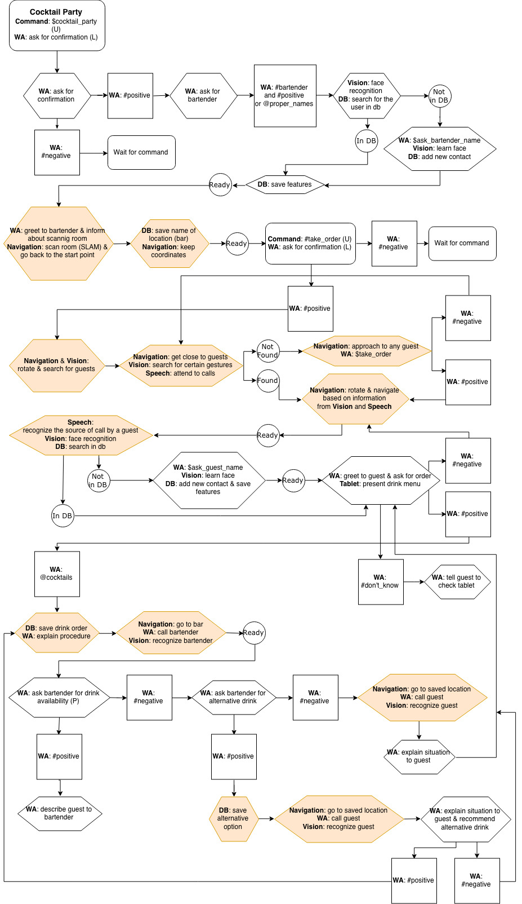

Conversation & Contextual Memory
Making small talk & remembering it
The goal
To enable Lou to serve at Cocktail Party in terms of conversation and information needed for conversation
The task
- create the overall conversation structure for the party
- develop a drink menu and an easy way to address it
- make Lou sound in a friendly and human way
- enable Lou to have a contextual memory with database
- integrate our work with other groups
How we did it
- Using Watson Assistant to build the conversation structure (used Python in addition to WA)
- Using Java to create the drink menu
- Using Redis as a database for Lou’s memory
- Usig ROS to integrate our work with other groups
Problems
- Considering as many scenarios as possible was hard
- Integrating with other groups was demanding as we were big in numbers
Flowchart for Cocktail Party
